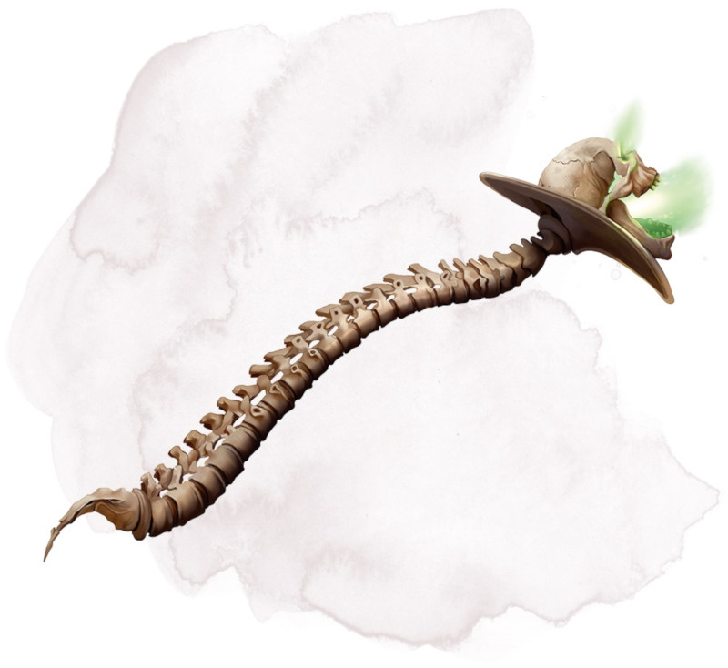

Baguette d'Orcus
[ Wand of Orcus ]
Baguette, artéfact (nécessite un lien)
L'épouvantable Baguette d'Orcus est la plupart du temps aux côtés d'Orcus lui-même. L'objet magique, aussi maléique que son créateur, partage les objectifs du seigneur démon, en particulier celui de tuer tout être vivant et d'enchaîner le Plan matériel à la non-vie. Orcus permet parfois à la baguette de le quitter. Lorsque cela arrive, elle apparaît par magie à un endroit où son maître a ressenti l'opportunité d'accomplir l'un de ses sombres desseins.
Faite dans de l'os aussi solide que du fer, la baguette est surmontée d'un crâne agrandi par magie et ayant autrefois appartenu à un héros humain vaincu par Orcus. La baguette peut modifier par magie sa propre taille pour s'adapter au mieux à la prise de son porteur. La végétation flétrit, les boissons deviennent non potables, la chair pourrit, et la vermine prospère en présence de la baguette.
Toute créature autre que Orcus qui tente de se lier à la baguette doit effectuer un jet de sauvegarde de Constitution DD 17. En cas de réussite au jet, la créature subit 10d6 dégâts nécrotiques. En cas d'échec au jet, la créature meurt et devient un zombi.
Entre les mains d'une créature qui s'est liée à elle, la baguette peut être maniée comme une masse d'armes magique qui confère un bonus de +3 aux jets d'attaque et de dégâts effectués avec elle. La baguette inflige 2d12 dégâts nécrotiques supplémentaire si le jet d'attaque touche.
Propriétés aléatoires. La baguette possède un certain nombre de propriétés déterminées aléatoirement :
• 2 propriétés bénéfiques mineures
• 1 propriété bénéfique majeure
• 2 propriétés néfastes mineures
• 1 propriété néfaste majeure
Les propriétés néfastes de la Baguette d'Orcus disparaissent lorsque la baguette est liée à Orcus lui-même.
Protection. Vous gagnez un bonus de +3 à votre Classe d'Armure tant que vous tenez la baguette.
Sorts. La baguette possède 7 charges. Tant que vous la tenez, vous pouvez utiliser une action pour dépenser 1 ou plusieurs de ses charges pour lancer l'un des sorts suivants (sauvegarde DD 18) : animation des morts (1 charge), flétrissement (2 charges), cercle de mort (3 charges), doigt de mort (3 charges), mot de pouvoir mortel (4 charges) ou communication avec les morts (1 charge). La baguette récupère 1d4 + 3 charges dépensées chaque jour à l'aube.
Tant qu'il est lié à la baguette, Orcus, ou toute autre créature qu'il a lui-même adoubée, peut lancer chacun des sorts de la baguette en utilisant deux charges de moins (pour un minimum de 0).
Appel de morts-vivants. Tant que vous tenez la baguette, vous pouvez utiliser une action pour invoquer des squelettes et des zombis, en appelant suffisante pour que le total de leurs points de vie cumulés de dépasse pas 500, chaque mort-vivant possédant ses points de vie moyens (voir les statistiques du squelette et du zombi). Les morts-vivants sortent par magie de terre, ou de toute autre forme, dans des espaces inoccupés situés dans un rayon de 90 mètres autour de vous et obéissent à vos ordres jusqu'à ce qu'ils soient détruits ou jusqu'au lever de soleil du jour suivant, ils tombent alors en petits monticules d'os et de chair pourrie inanimée. Une fois que vous avez utilisé cette propriété de la baguette, vous ne pouvez plus la réutiliser avant le lever de soleil suivant.
Tant qu'il est lié à la baguette, Orcus peut invoquer n'importe quel type de mort-vivant, pas uniquement des squelettes et des zombis. Les morts-vivants ne sont pas détruits ni ne disparaissent au lever de soleil du jour suivant, ils restent en « vie » jusqu'à ce qu'Orcus les renvoie.
Conscience. La Baguette d'Orcus est un objet intelligent chaotique mauvais qui possède une Intelligence de 16, une Sagesse de 12, et un Charisme de 16. Il peut entendre et possède la vision dans le noir à 36 mètres.
La baguette communique par télépathie avec son porteur et peut parler, lire, et comprendre l'abyssal et le commun.
Personnalité. L'objectif de la baguette est d'aider Orcus à satisfaire son désir d'annihiler toute chose dans le multivers. La baguette est froide, cruelle, nihiliste, et sans aucun sens de l'humour.
Pour atteindre plus facilement les objectifs de son maître, la baguette feint une dévotion totale pour son utilisateur secondaire et lui fait de mirifiques promesses qu'elle n'a aucunement l'intention de tenir, comme par exemple lui jurer de l'aider à renverser Orcus.
Détruire la baguette. Détruire la Baguette d'Orcus nécessite qu'elle soit emmenée dans le Plan de l'Énergie Positive par l'ancien héros dont le crâne orne une des extrémités de la baguette. Pour cela, il faudra d'abord ramener à la vie le dit-héros, ce qui ne sera pas chose facile puisque son âme est cachée et gardée prisonnière par Orcus lui-même.
Plonger la baguette dans l'énergie positive la fait craquer puis exploser, mais, à moins que toutes les conditions ne soient remplies, la baguette se reforme instantanément dans la strate des Abysses que contrôle Orcus.
Faite dans de l'os aussi solide que du fer, la baguette est surmontée d'un crâne agrandi par magie et ayant autrefois appartenu à un héros humain vaincu par Orcus. La baguette peut modifier par magie sa propre taille pour s'adapter au mieux à la prise de son porteur. La végétation flétrit, les boissons deviennent non potables, la chair pourrit, et la vermine prospère en présence de la baguette.
Toute créature autre que Orcus qui tente de se lier à la baguette doit effectuer un jet de sauvegarde de Constitution DD 17. En cas de réussite au jet, la créature subit 10d6 dégâts nécrotiques. En cas d'échec au jet, la créature meurt et devient un zombi.
Entre les mains d'une créature qui s'est liée à elle, la baguette peut être maniée comme une masse d'armes magique qui confère un bonus de +3 aux jets d'attaque et de dégâts effectués avec elle. La baguette inflige 2d12 dégâts nécrotiques supplémentaire si le jet d'attaque touche.
Propriétés aléatoires. La baguette possède un certain nombre de propriétés déterminées aléatoirement :
• 2 propriétés bénéfiques mineures
• 1 propriété bénéfique majeure
• 2 propriétés néfastes mineures
• 1 propriété néfaste majeure
Les propriétés néfastes de la Baguette d'Orcus disparaissent lorsque la baguette est liée à Orcus lui-même.
Protection. Vous gagnez un bonus de +3 à votre Classe d'Armure tant que vous tenez la baguette.
Sorts. La baguette possède 7 charges. Tant que vous la tenez, vous pouvez utiliser une action pour dépenser 1 ou plusieurs de ses charges pour lancer l'un des sorts suivants (sauvegarde DD 18) : animation des morts (1 charge), flétrissement (2 charges), cercle de mort (3 charges), doigt de mort (3 charges), mot de pouvoir mortel (4 charges) ou communication avec les morts (1 charge). La baguette récupère 1d4 + 3 charges dépensées chaque jour à l'aube.
Tant qu'il est lié à la baguette, Orcus, ou toute autre créature qu'il a lui-même adoubée, peut lancer chacun des sorts de la baguette en utilisant deux charges de moins (pour un minimum de 0).
Appel de morts-vivants. Tant que vous tenez la baguette, vous pouvez utiliser une action pour invoquer des squelettes et des zombis, en appelant suffisante pour que le total de leurs points de vie cumulés de dépasse pas 500, chaque mort-vivant possédant ses points de vie moyens (voir les statistiques du squelette et du zombi). Les morts-vivants sortent par magie de terre, ou de toute autre forme, dans des espaces inoccupés situés dans un rayon de 90 mètres autour de vous et obéissent à vos ordres jusqu'à ce qu'ils soient détruits ou jusqu'au lever de soleil du jour suivant, ils tombent alors en petits monticules d'os et de chair pourrie inanimée. Une fois que vous avez utilisé cette propriété de la baguette, vous ne pouvez plus la réutiliser avant le lever de soleil suivant.
Tant qu'il est lié à la baguette, Orcus peut invoquer n'importe quel type de mort-vivant, pas uniquement des squelettes et des zombis. Les morts-vivants ne sont pas détruits ni ne disparaissent au lever de soleil du jour suivant, ils restent en « vie » jusqu'à ce qu'Orcus les renvoie.
Conscience. La Baguette d'Orcus est un objet intelligent chaotique mauvais qui possède une Intelligence de 16, une Sagesse de 12, et un Charisme de 16. Il peut entendre et possède la vision dans le noir à 36 mètres.
La baguette communique par télépathie avec son porteur et peut parler, lire, et comprendre l'abyssal et le commun.
Personnalité. L'objectif de la baguette est d'aider Orcus à satisfaire son désir d'annihiler toute chose dans le multivers. La baguette est froide, cruelle, nihiliste, et sans aucun sens de l'humour.
Pour atteindre plus facilement les objectifs de son maître, la baguette feint une dévotion totale pour son utilisateur secondaire et lui fait de mirifiques promesses qu'elle n'a aucunement l'intention de tenir, comme par exemple lui jurer de l'aider à renverser Orcus.
Détruire la baguette. Détruire la Baguette d'Orcus nécessite qu'elle soit emmenée dans le Plan de l'Énergie Positive par l'ancien héros dont le crâne orne une des extrémités de la baguette. Pour cela, il faudra d'abord ramener à la vie le dit-héros, ce qui ne sera pas chose facile puisque son âme est cachée et gardée prisonnière par Orcus lui-même.
Plonger la baguette dans l'énergie positive la fait craquer puis exploser, mais, à moins que toutes les conditions ne soient remplies, la baguette se reforme instantanément dans la strate des Abysses que contrôle Orcus.
Dungeon Master´s Guide
